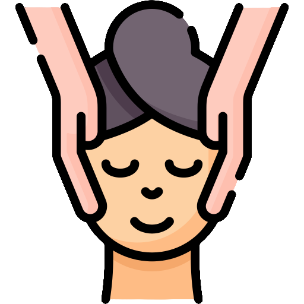
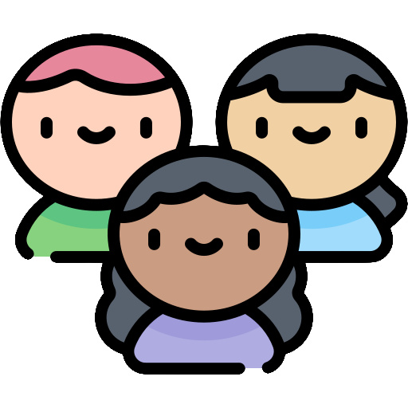
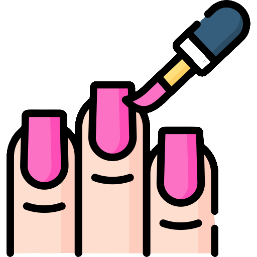
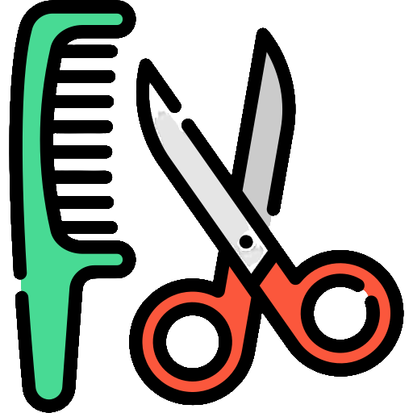
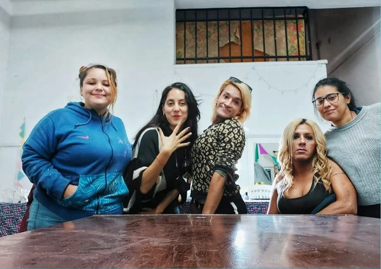
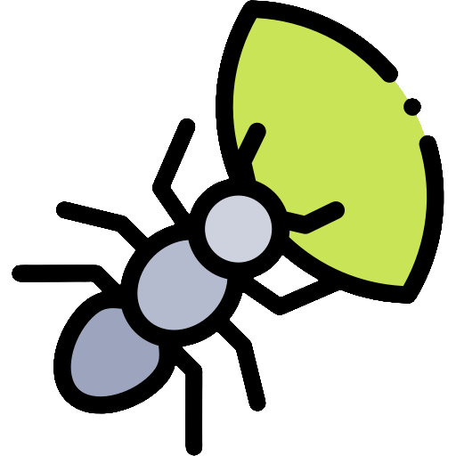
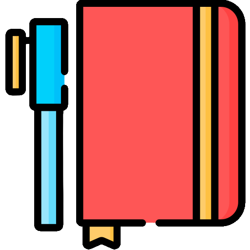
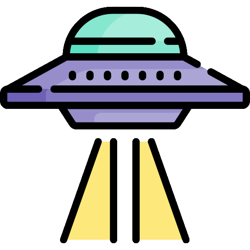
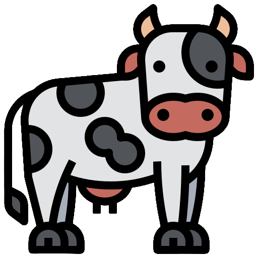

Quiénes somos?
Somos No tan Distintes, una organización social feminista que acompaña y contiene a mujeres cis, lesbianas, travestis, trans y personas no binarias jóvenes y adultes con o
sin hijas o hijos a cargo, en situación de calle y en riesgo de situación de calle.
Acompañamos a todes aquelles que en este momento se encuentran viviendo en el espacio público y a todes aquelles que terminarán en esta situación tarde o temprano, es decir:
-
 Quienes se encuentran en instituciones de las cuales egresarán en un tiempo determinado, tales como hospitales de salud mental, cárceles o
institutos de menores de edad, y que cuando eso ocurra no tienen dónde vivir,
Quienes se encuentran en instituciones de las cuales egresarán en un tiempo determinado, tales como hospitales de salud mental, cárceles o
institutos de menores de edad, y que cuando eso ocurra no tienen dónde vivir, - Quienes están notificades con orden de desalojo,
- Quienes se encuentran alquilando a través de subsidios habitacionales y que, cuando terminen de cobrar las cuotas del programa, no podrán sostener sus alquileres,
- Quienes se encuentran viviendo situaciones de violencia dentro de sus casas y que, cuando decidan desvincularse del violento,
quedarán en la calle por no contar con una red afectiva que las contenga.
Todes nosotres estamos enlazades por una lucha en común: evitar que haya personas viviendo en la calle, a la vista del resto de la sociedad que las discrimina y margina cotidianamente.
Qué es enetedé?
Enetedé es nuestro emprendimiento autogestivo desde el cual se imaginan y materializan proyectos productivos con una mirada popular.
Nos planteamos este desafío: una línea de fuga creadora hacia una economía transfeminista que genere redes cada vez más amplias y potentes en su deseo transformador.
Proponemos una mirada ecológica, autogestiva , popular y transfeminista.
Nos organizamos porque entendemos que la salida es colectiva.
Exigimos el reconocimiento y cumplimiento de nuestros derechos, a la vez que construimos alternativas de trabajo: procesos productivos colectivos y autogestivos desde los transfeminismos.
Sabemos que aún hay mucho camino por andar:
- Para que las tareas de cuidados que realizamos sean realmente reconocidas,
- Para la plena implementación de medidas tan necesarias como el cupo laboral travesti trans,
- Para saldar las deudas y desigualdades estructurales haciendo realidad nuestra demanda: ¡Nadie en calle más!
 SPA HOLÍSTICO Y POPULAR 
-  Hacemos manicura, belleza de pies. Semipermanente, esmaltado tradicionales, esmalte veganos y sin tacc.
-  Peluquería
- Terapias holisticas, Reiki, shiatsu en silla y reflexo.
Es un espacio que provee servicios de terapias y cuidados holísticos brindado por nosotres mismes a precios populares con el objetivo de promover formas de cuidados más diversas en integrales
 HORMIGUES ARTESANES| AGENDAS Y CUADERNOS 
Nuestros cuadernos, anotadores, libros y agendas
están realizados con materiales reciclados:
Telas, tetras y envases que aporta la comunidad.
Son productos ecológicos y artesanales!

 EDITORIAL|ABDUCIENDO UNA VACA 
El nombre “Abduciendo una vaca” surgió colectivamente para nuestra nueva editorial artesanal,
continuidad de los talleres de poesía, edición de fanzines y arte y reciclado que venimos haciendo desde hace años.
“Abducir” significa arrebato, apoderarse de alguien, atracción poderosa.
Queremos que nuestros libros sean así: rayos de fuerza, luz que muestre escrituras de arrebato puro.
Cada tapa de los libros de Abduciendo Una Vaca es producida artesanalmente y con elementos reciclados
Editamos libros de poemas y también fanzines, todo pensado, escrito y elaborado por compas de la orga